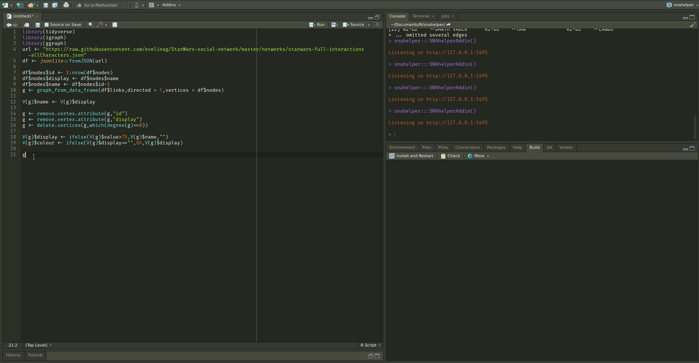
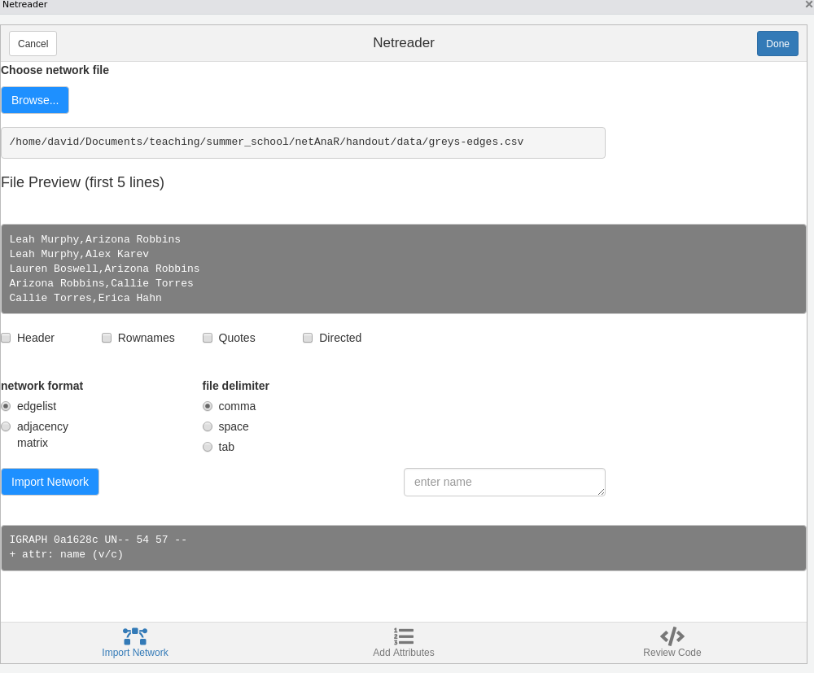
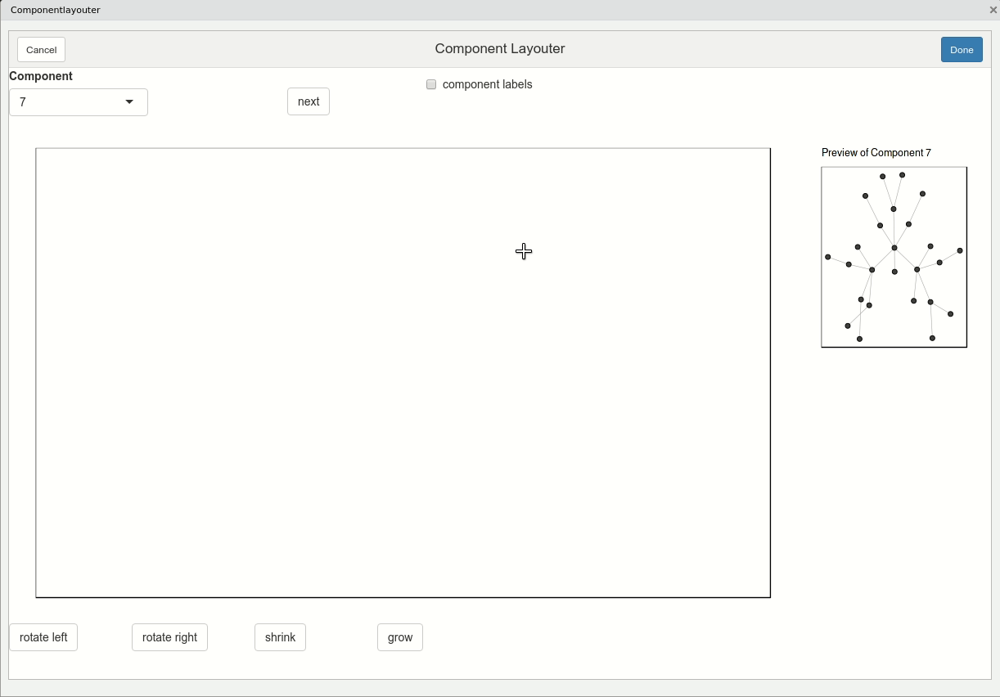
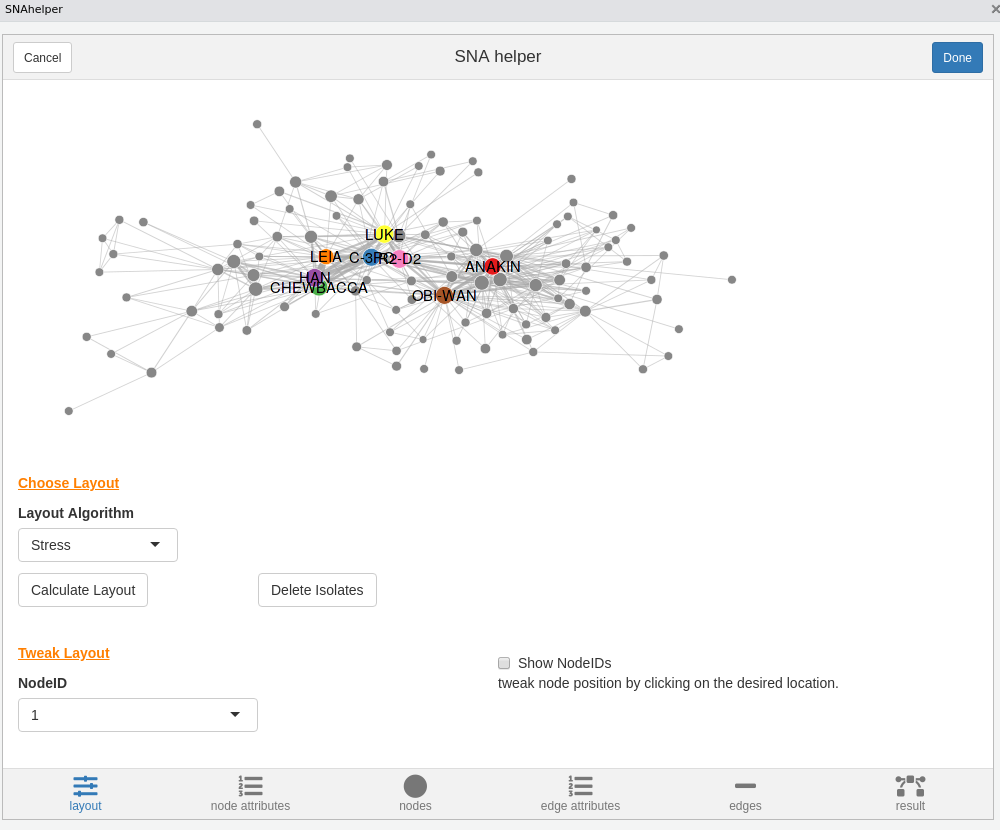
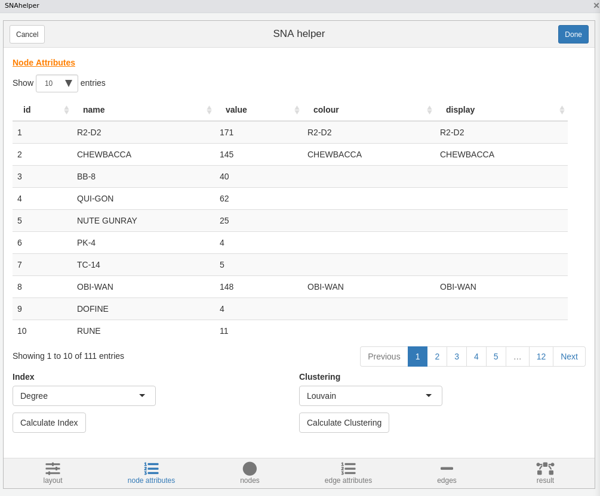
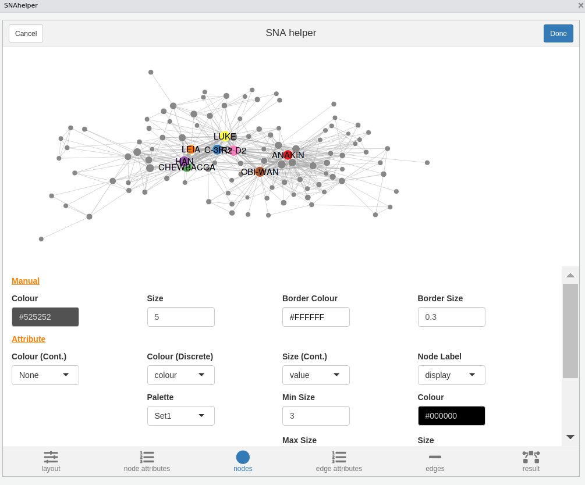
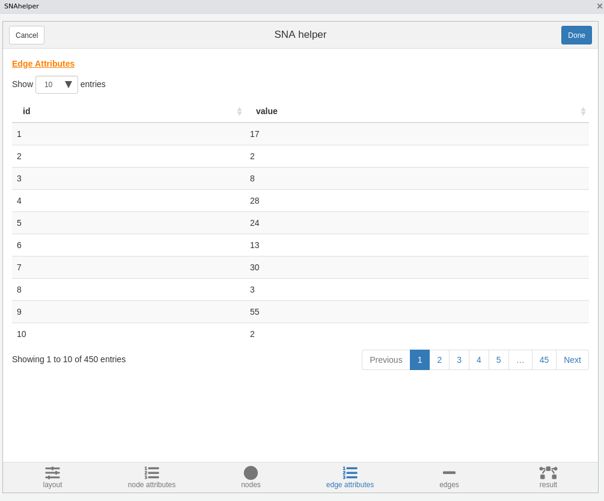
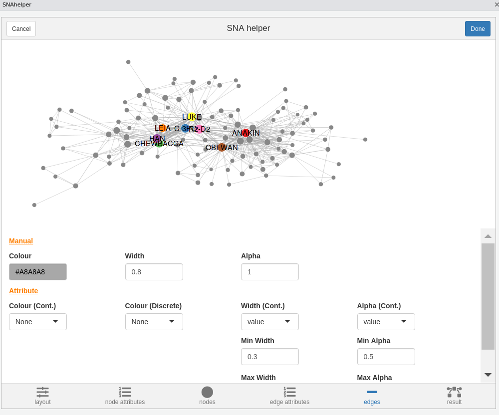

snahelper provides a set RStudio Addin for social network analysis. The main addin is the SNAhelper which provides a simple GUI to do common network analytic tasks and visualize a network with ggraph.
The second addin, called Netbuilder allows you to quickly build small networks with a small “canvas” to draw on. The network can be exported as an igraph object at the end of the session by clicking on “Done”.
The third addin Netreader is meant to facilitated the import of raw network data. It provides a GUI to easily read network and attribute data and combine them to an igraph object. The underlying code of the import procedure is shown at the end. This should help users to learn importing data themselves.
The fourth addin Componentlayouter allows to layout networks with several components manually by placing them on an empty canvas. Components can also be rotated and resized. After finishing the session, the layout is saved as x and y vertex attributes.
Quick look at the SNAhelper

Code to reproduce the used network.
library(tidyverse)
library(igraph)
url <- "https://raw.githubusercontent.com/evelinag/StarWars-social-network/master/networks/starwars-full-interactions-allCharacters.json"
df <- jsonlite::fromJSON(url)
df$nodes$id <- 1:nrow(df$nodes)
df$nodes$display <- df$nodes$name
df$nodes$name <- df$nodes$id-1
g <- graph_from_data_frame(df$links,directed = F,vertices = df$nodes)
V(g)$name <- V(g)$display
g <- remove.vertex.attribute(g,"id")
g <- remove.vertex.attribute(g,"display")
g <- delete.vertices(g,which(degree(g)==0))
V(g)$display <- ifelse(V(g)$value>75,V(g)$name,"")
V(g)$colour <- ifelse(V(g)$display=="",NA,V(g)$display)
gQuick look at the Netreader
Netreader should be pretty selfexplanatory. The first two tabs allow you to import raw data (edges and attributes). Make sure to specify file delimiters, etc. according to the shown preview.

Using the Netreader should comes with a learning effect (hopefully). The last tab shows the R code to produce the network with the chosen data without using the Addin. 
The network will be saved in your global environment once you click “Done”.
Quick look at the Componentlayouter

Highlight an igraph object in your script and selcet the Componentlayouter from the RStudio addin menu. Components are added by clicking on the canvas and can be resized/rotated and re-positioned using the buttons at the bottom. The final layout is stored as x and y coordinates in the igraph object.
Installation
# developer version
#install.packages(remotes)
remotes::install_github("schochastics/snahelper")
#CRAN version
install.packages("snahelper")To work properly, you also need graphlayouts, which adds new layout algorithms.
install.packages("graphlayouts")Usage of SNAhelper
To use the main addin, simply highlight a network in your script and select SNAhelper from the Addin dropdown menu.
Interface
Layout
The layout tab allows you to choose from all implemented algorithms in igraph and some layouts from graphlayouts. The default is a stress based layout and also the recommended choice. See my blog for an explanation. In the tweak section you can move individual nodes around. Choose the node from the dropdown menu and click on its new position in the plot.

Node Attribute Manager
The Node Attribute Manager shows all existing node attributes in a sortable table. In addition, you can calculate some new ones (centrality and clustering). The functions automatically choose the right version of indices, depending if the network is directed/weighted/undirected/unweighted.

Nodes
This is where you can style your nodes. You can either do it manually, by choosing a color/size for all nodes together, or based on an attribute.

Edge Attribute Manager
Same as Node Attribute Manager but for edges. So far only shows existing edge attributes.

Edges
You can style your edges here. snahelper automatically detects if your network is directed and adds arrows if the network is directed. The other options are similar to the nodes tab. The snahelper automatically chooses the appropriate edge geom. If multiple edges are present, it uses geom_edge_parallel0(). Otherwise geom_edge_link0().
